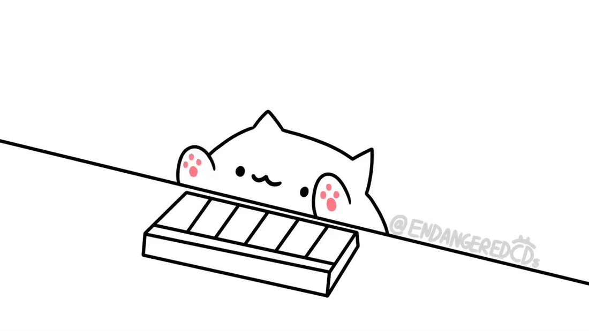

<!DOCTYPE html>
<html lang="en" dir="ltr">
	<head>
		<meta charset="utf-8">
		<title>BongoPlayer</title>
		<script type="text/javascript" src="jquery-3.3.1.min.js"></script>
		<script type="text/javascript" src="StartAudioContext.js"></script>
		<script type="text/javascript" src="Tone.min.js"></script>
		<style media="screen">
			#bongoCatImageContainer {
				text-align: center;
			}

			#bongoCatImageContainer img {
				width: 250px;
			}
		</style>
	</head>
	<body>
		<div id="bongoCatImageContainer"></div>
		<script type="text/javascript">
		// python -m http.server
		var pianoFolder = 'insts/piano/'
		var songJSON = ''
		var $bongoCatImageContainer = $('#bongoCatImageContainer')
		var bongoCatHandClearTimeout = []

		// Load Instruments
		var pianoNotes = {
			'C1': 'C1.mp3',
			'C2': 'C2.mp3',
			'C3': 'C3.mp3',
			'C4': 'C4.mp3',
			'C5': 'C5.mp3',
			'C6': 'C6.mp3',
			'C7': 'C7.mp3'
		}

		var pianoBuffersLoaded = false
		var pianoBuffer = new Tone.Buffers(pianoNotes, {
			'baseUrl': pianoFolder,
			'onload': function() {
				console.log('All loaded.')
				pianoBuffersLoaded = true
			}
		});

		var piano = new Tone.Sampler({ }, {
			'release' : 0.5,
			'volume' : 0
		});

		var loadFileInterval = setInterval(function() {
			if(pianoBuffersLoaded == true) {
				$.each(pianoNotes, function(sampleNote) {
					piano.add(sampleNote, pianoBuffer.get(sampleNote));
				});
				piano.toMaster();
			}
		}, 500);


		var visualizerNotes = ['A0', 'A#0', 'B0', 'C1', 'C#1', 'D1', 'D#1', 'E1', 'F1', 'F#1', 'G1', 'G#1', 'A1', 'A#1', 'B1', 'C2', 'C#2', 'D2', 'D#2', 'E2', 'F2', 'F#2', 'G2', 'G#2', 'A2', 'A#2', 'B2', 'C3', 'C#3', 'D3', 'D#3', 'E3', 'F3', 'F#3', 'G3', 'G#3', 'A3', 'A#3', 'B3', 'C4', 'C#4', 'D4', 'D#4', 'E4', 'F4', 'F#4', 'G4', 'G#4', 'A4', 'A#4', 'B4', 'C5', 'C#5', 'D5', 'D#5', 'E5', 'F5', 'F#5', 'G5', 'G#5', 'A5', 'A#5', 'B5', 'C6', 'C#6', 'D6', 'D#6', 'E6', 'F6', 'F#6', 'G6', 'G#6', 'A6', 'A#6', 'B6', 'C7', 'C#7', 'D7', 'D#7', 'E7', 'F7', 'F#7', 'G7', 'G#7', 'A7', 'A#7', 'B7', 'C8'];;

		$(document).ready(function() {
			$.ajax({
				dataType: 'json',
				url: 'songs/BTS-BST.json',
				async: false // Need to fix
			}).done(function(data) {
				songJSON = data

				bongoCatHandClearTimeout = new Array(songJSON.tracks.length)

				$.each(songJSON.tracks, function(trackIndex, track) {

					if(track.instrumentFamily == 'drums') {
						return true;
					}

					$bongoCatImageContainer.append('')

					var part = new Tone.Part(function(time, note ) {
						piano.triggerAttackRelease(note.name, note.duration, time, note.velocity);

						var imageDownIndex = Math.floor(visualizerNotes.indexOf(note.name) / 15) + 1;

						Tone.Draw.schedule(function() {
							// Immediately set hands to up
							$('#bongoCat' + trackIndex).attr('src', 'u.png')
							clearInterval(bongoCatHandClearTimeout[trackIndex])

							setTimeout(function() {
								$('#bongoCat' + trackIndex).attr('src', 'd' + imageDownIndex + '.png')
								// Store timeout and clear every time
								bongoCatHandClearTimeout[trackIndex] = setTimeout(function() {
									$('#bongoCat' + trackIndex).attr('src', 'u.png')
								}, Math.round(note.duration * 1000));
							}, 100)
						}, time);
					}, track.notes).start(0)
				});

				Tone.Transport.start('+0.1')
			})

			StartAudioContext(Tone.context, '#start').then(function() {
			})
		});
	</script>
	</body>
</html>
